【下篇】走入都會與夜色水岸（澀谷・表參道 ➔ 神宮棒球場 ➔ 六本木 ➔ 藏前《戀仲》）
【下篇】走入都會與夜色水岸（澀谷・表參道 ➔ 神宮棒球場 ➔ 六本木 ➔ 藏前《戀仲》）
👈 重溫早晨下町與海鮮丼？請見：【上篇】晨光下町與超載鮮魚：晴空塔出發、淺草寺九頭龍閃，以及齊藤割烹海鮮丼 ➔
👈 重溫荒川路面電車與豚野郎炭烤豚丼？請見：【中篇】叮叮叮的鐵道日常：搭上東京都電荒川線，去御茶之水吃炭燒「豚野郎」➔
[tokyo 散策 03] 走入都會與夜色水岸：表參道早休雜貨、明治神宮棒球場夜跑，以及藏前隅田川的《戀仲》微光
本文為2015貼文（2026整理）
【東京漫步系列・三部曲 之三】
告別白天的荒川線路面電車與御茶之水「豚野郎」的炭香大盛燒肉，午後把路線拉回都會核心的澀谷與表參道。
在八點準時拉下鐵捲門的雜貨鋪前撲空、偶然撞見神宮棒球場外的黑夜跑者，再一路從六本木的大蜘蛛看到東京鐵塔，最後回到藏前的隅田川橋上，收穫一個專屬《戀仲》的沉靜夜色。
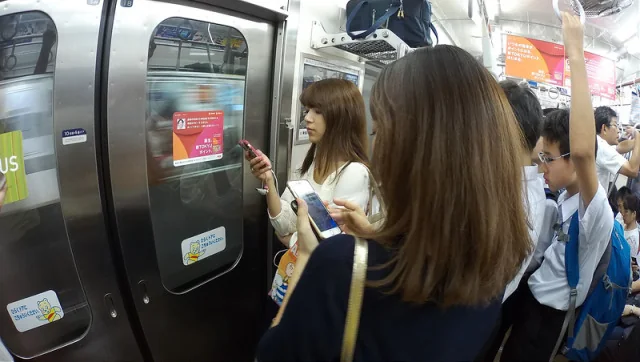
ALT今日BONUS！！！
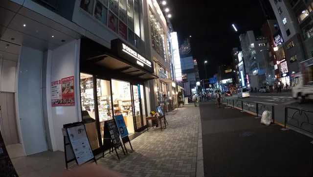
ALT緊接著來到澀谷+表參道
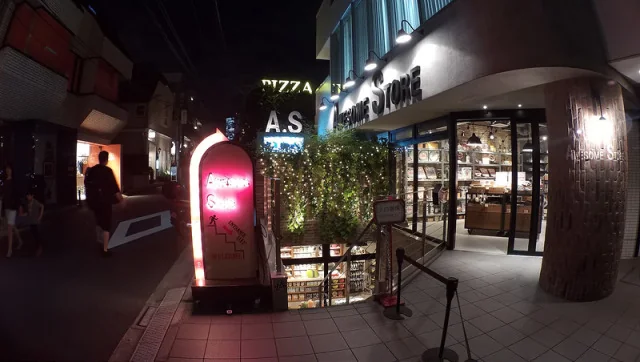
ALT看了另一本旅遊書 來了 ASOKO | Awesome Store | Flying Tiger
整體來說，AS東西少，ASOKO居中，FT最多
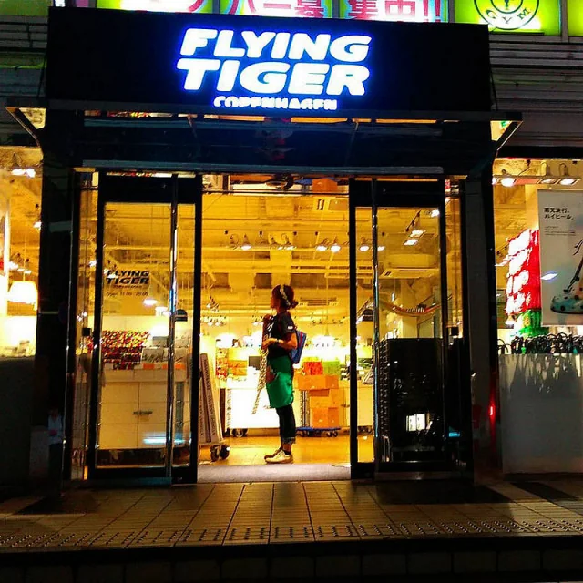
ALT每一家都20:00關門是怎樣～～
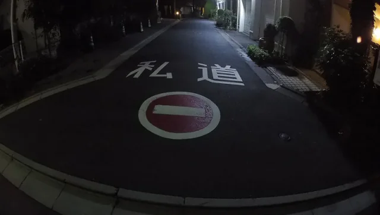
ALT住在表參道這裡的有錢人 確確實實名車＋平頭人很多！
📌 設計浪潮｜2010 年代東京平價雜貨三巨頭： 當年由北歐哥本哈根引進的趣味設計 Flying Tiger、大阪發跡主打幽默幾何的 ASOKO，以及強調美式木質復古的 Awesome Store，在原宿表參道掀起狂熱的平價美學旋風。不過日本店鋪八點準時拉下鐵門的規矩，常常讓熱血購物的旅人撲空扼腕。
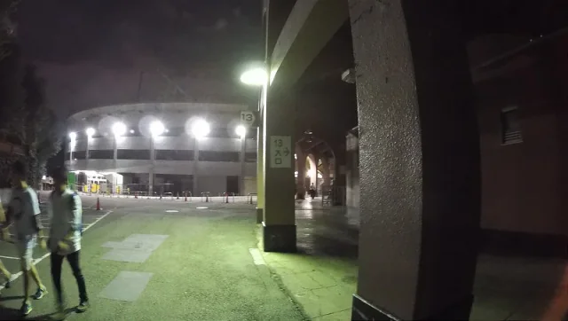
ALT因為走著走著，發現明治神宮棒球場就在附近 所以又早到另一條路上了
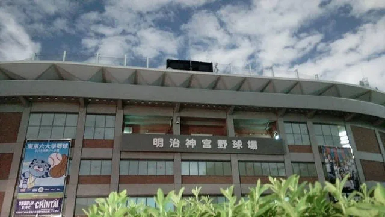
ALT於是又看到 明治神宮外苑
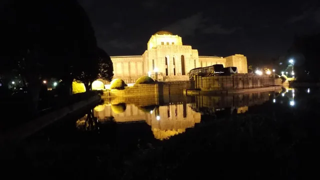
ALT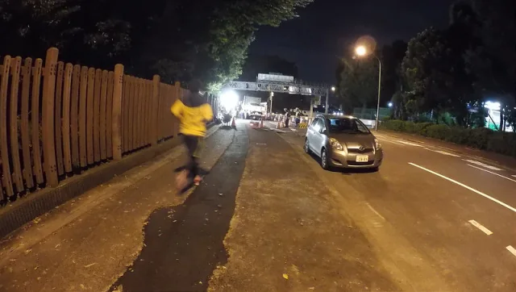
ALT與衝刺的運動人潮
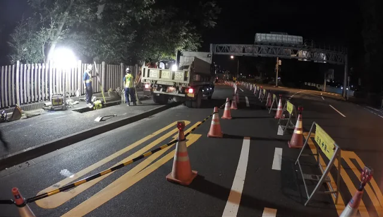
ALT一點都不誇張，工地前後引導的指引人員
會對著經過的人說出要注意 然後靠哪邊走..
真的很大細緻！！
📌 球場聖地與職人細節：
・明治神宮棒球場（1926 年開場）： 歷史僅次於甲子園，為東京養樂多燕子隊主場與東京六大學棒球聖地，滿載老式露天看台與紅土內野的復古浪漫。
・警備誘導員文化： 日本公共工程極致細膩的縮影。無論夜間或狹窄巷道，誘導員必定手持指揮棒、90度躬身並逐一向經過行人輕聲指引，將公共安全做到近乎儀式般的體貼。
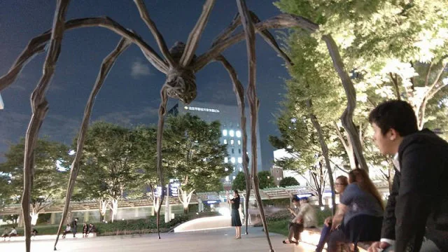
ALT硬是再來六本木之丘看大蜘蛛！！
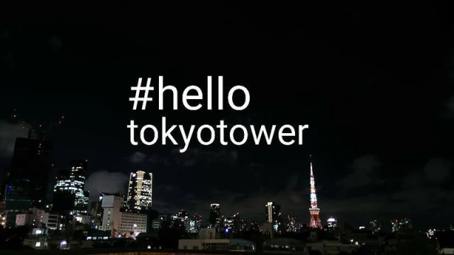
ALT然後不能少了看我們這個時代的東京代表 東京鐵塔！ #tokyotower
📌 當代藝術地標｜六本木之丘《Maman》巨型蜘蛛： 法裔美籍雕塑大師路易絲·布爾喬亞（Louise Bourgeois）的傳世青銅雕塑（高逾 9 公尺）。蜘蛛腹下懷抱著 32 顆白色大理石卵，藉由織網與堅韌身形向其母親致敬，是森大廈廣場最著名的公共藝術。
以及回到藏前附近 實際走一下戀仲的夜景！ #Koinaka
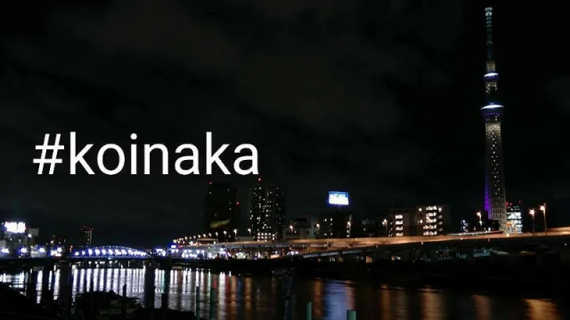
ALT📌 日劇朝聖｜藏前、隅田川與《戀仲》（恋仲）： 2015 年福士蒼汰與本田翼主演的富士「月九」純愛劇。男女主角重逢後散步談心的核心場景，正是以藏前橋、廄橋一帶的隅田川水岸為舞台。入夜後金屬橋身光影倒映河面，遠方晴空塔靜靜矗立，成為新興文青區藏前最迷人的夜景意象。
一整天散策落幕：從老下町到隅田川夜色
同一座晴空塔，從清晨淺草的遠望，到深夜藏前橋上的微光倒影。
想要重溫白天的下町行程？隨時點擊回顧：
👈 回顧第一篇：【上篇】晨光下町與超載鮮魚：晴空塔出發、淺草寺九頭龍閃，以及齊藤割烹海鮮丼 ➔
👈 回顧第二篇：【中篇】叮叮叮的鐵道日常：搭上東京都電荒川線，去御茶之水吃炭燒「豚野郎」➔